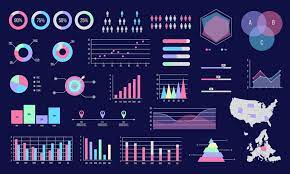

Data Science and Machine Learning projects
During my master's program, I acquired extensive knowledge and skills in Statistics, Probability, Machine Learning, Deep Learning, and Data Visualization.
I applied these concepts in various projects to gain practical experience and hands-on skills. Additionally, through my involvement in term projects,
I gained a wide range of responsibilities, including data processing, feature selection, model fine-tuning, and model deployment.

In this project, we perform exploratory data analysis on an NFL dataset using Python, NumPy, and Pandas. The focus is on exploring and describing the data.
Statistical Analysis
Movie Revenue
In this project, we select and develop a research question, curate the necessary data, and conduct a statistical regression study.
Data Engineering
Location Recommendations

In this project, we explore the use of NoSQL databases such as Neo4j, MongoDB, and Redis to recommend a physical store expansion strategy.
Machine Learning
Understand Hate Crime

In this project, we leveraged machine learning techniques to gain insights into hate crime. We performed data cleaning, created and tuned machine learning models. Using linear regression, we discovered strong relationships within the data.
Data visualization
Travel Guide Reimagined

In this project, I learned that data visualization is a powerful tool for both exploring and communicating data insights. I gained practical knowledge and hands-on experience using software tools to design effective visual representations. I discovered patterns, answered questions, conveyed findings, and made data-driven decisions.
Machine Learning at Scale
Flight Delay Analysis

In this project, I aimed to build scalable machine learning pipelines capable of handling petabyte-scale data. It involved exploring MapReduce parallel computing with Hadoop and Spark, along with algorithmic design using techniques like decision tree learning and gradient descent. Practical experience was gained through hands-on exercises and real-world applications in the airline industry, utilizing Python notebooks and MapReduce parallel computing frameworks.
Machine Learning
System Engineering

In this project, I gained hands-on experience in data management, systems engineering, and containerization using industry-standard tools like Kubernetes and cloud ecosystems. The project focused on building practical knowledge in areas such as data pipelines, security, architectural design, and deploying ML models in production systems, while also highlighting the impact of these tools on the technology landscape. Additionally, I learned about microservice architectures, continuous integration and delivery pipelines, stateful systems, performance optimization, and efficient management of ML models using Kubernetes.

Providing both visual and calculated running route safety information to arm runners with the knowledge necessary to remain safe while.
i. UC Berkeley Project Page